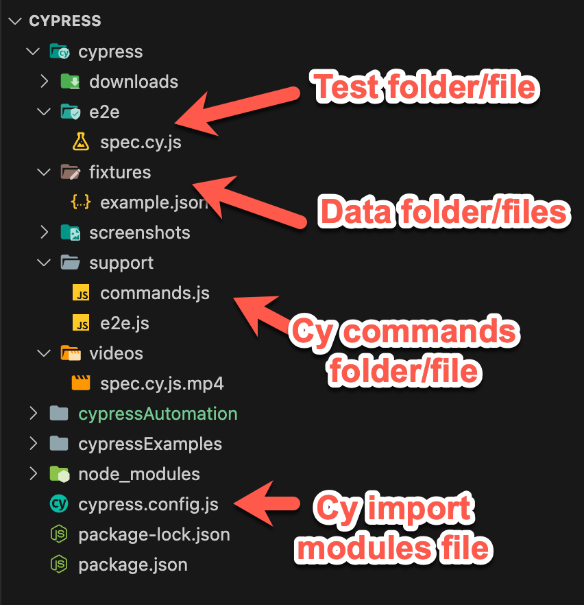
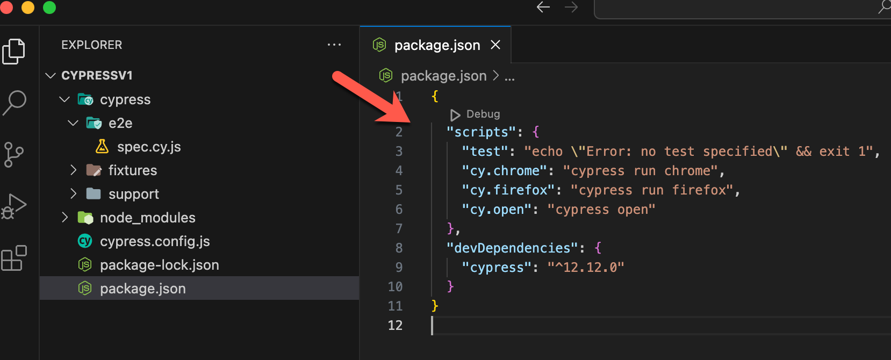
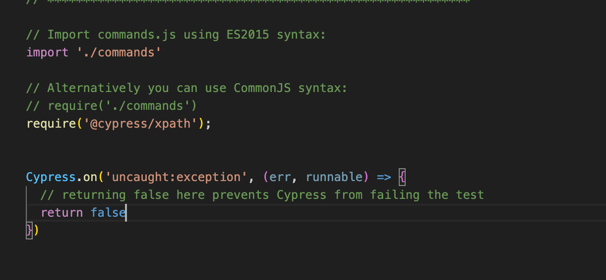
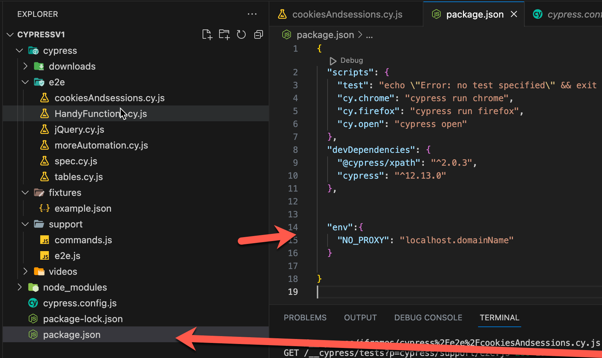
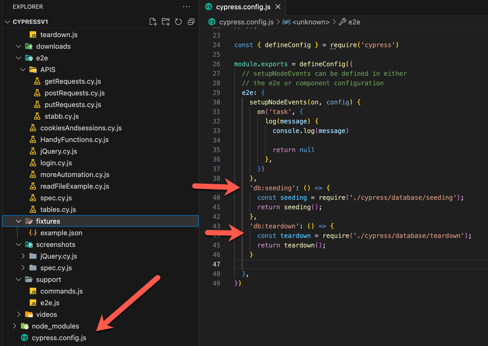
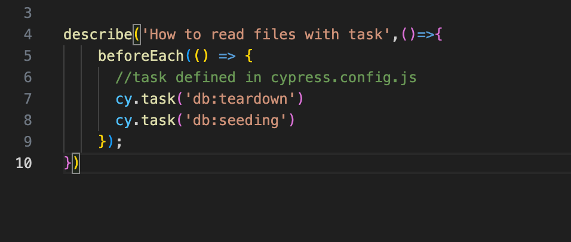
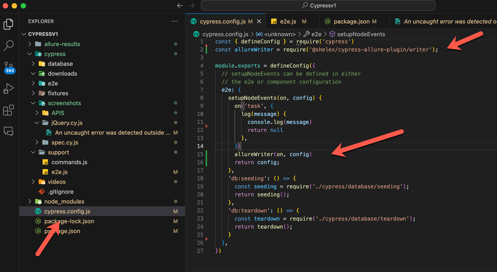
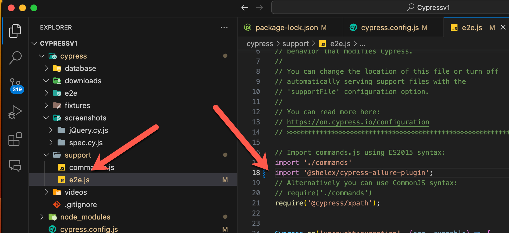
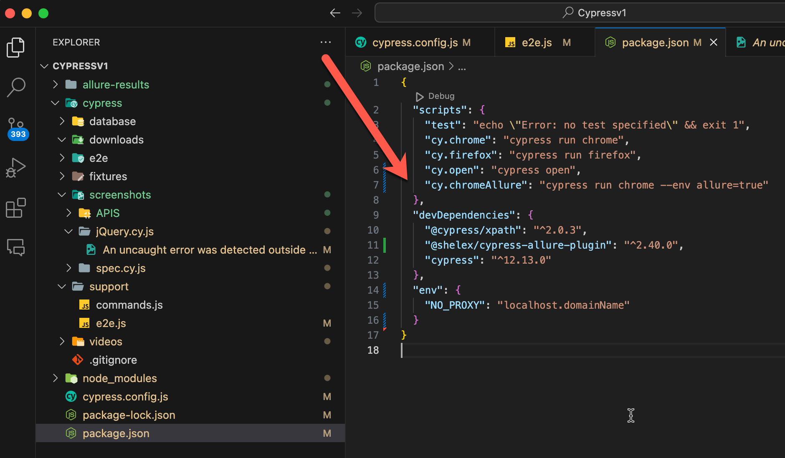
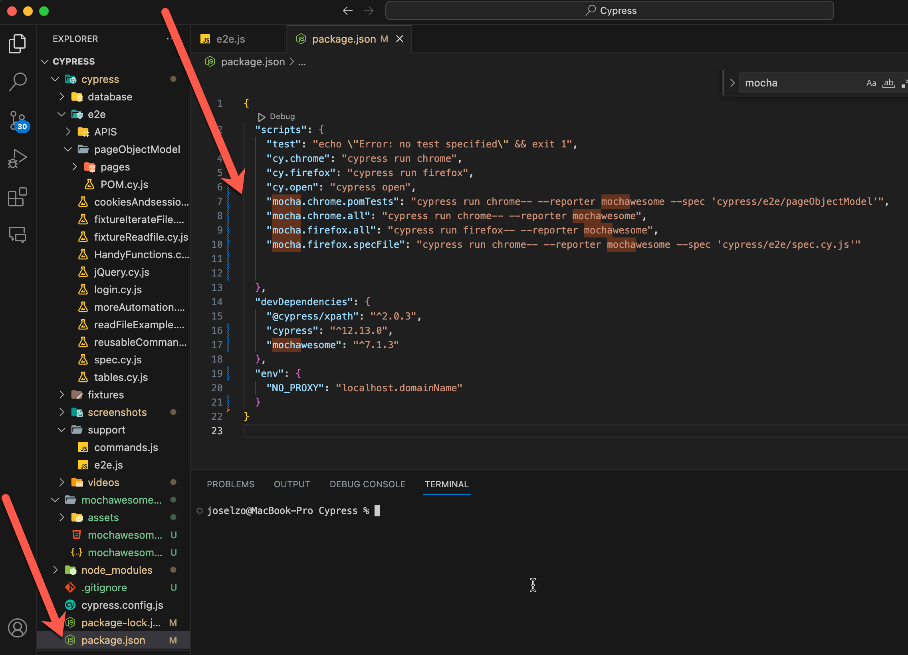

Cypress installation
Pre-conditions
- Node version manager NVM here
- Open a terminal in you project folder
- type: npm init and complet the require fields
- Install cypress (inside your project)--> npm install cypress --save-dev
- Check cypress version --> npm cypress -version
- Execute to open cypres: ./node_modules/.bin/cypress open
- Open cypress (inside your project) --> npx cypress open
- Once cypress is open, select e2e testing, continue
- add scripts to run in your package.json file
- "cy.chrome": "cypress run -b chrome --reporter mochawesome --spec 'cypress/e2e/**'",
- "cy.open": "cypress open"
- In order to add cucumber:
- https://github.com/badeball (plugin owner)
- type inside your project: npm i -D cypress @bahmutov/cypress-esbuild-preprocessor esbuild
- also the cucumber pre-procesor: npm install @badeball/cypress-cucumber-preprocessor
- Test cases folder --> e2e
- Cypress test cases extensions --> cy.js
- Check cypress documentation: Cypress
documentation
- Download cypress snippet for visual code
In order to update cypress
- Open cypress project
- inside the project, search for the promp update
- copy the script, close the project and paste it in the terminal
- script example: npm install -D cypress@12.12.0
Cypress files structure

e2e.js file, works for inherit object or flows
Usefull scripts for your project in the package.json file
In order to extecute cypress with your own command

"scripts": {
"test": "echo \"Error: no test specified\" && exit 1",
"cy.chrome": "cypress run chrome",
"cy.firefox": "cypress run firefox",
"cy.open": "cypress open"
},
To run execute in the project path: npm run cy.chrome or /firefox/open
xpath pluggin
Documentation
- inside you project: npm install -D @cypress/xpath
- Then include in your project, folder support, file e2e.jsfile: require('@cypress/xpath');
- usage: cy.xpath('//body') in the spect file
spec.cy.js file (Test file)

Ignore undefinded errors support/e2e.js

Cypress.on('uncaught:exception', (err, runnable) => {
// returning false here prevents Cypress from failing the test
return false
});
Tips
Filters allows you to filter an element by an state
- enabled
- disabked
- checked
- empty
- visible
- Usage example: cy.get('.checkbox':checked)
Usefully assertions
- should.('exist') -> To make sure that the element exist
- should.('not.exist') -> To make sure that the element do not exist
- should.('be.checked') -> To make sure that the box or radio button is checked
- should.('be.disabled') -> To make sure that the element is disabled
- .should('have.text','textElement')-> Search for the text of the element
Usefully functions
- cy.log("text for log in the test execution")-> works for write something between the cases
- .pause() pause the execution after a instruction, for resume click the play in the cypress
runner
- .debug() use after a instruction, this debug information can be reach in the devtools, open it in the
devtools from the cypress runner
- You can use alias to objects in order to call it in another cases
- You can wait in milliseconds for a control with cy.wait(1000)
- In order to avoid cases with multiple tabs in one flow use: .invoke('removeAttr', 'target')
most used command in cypress
- .check() -> click on a checkbox
- .uncheck() -> unclick on a checkbox
- .select('objectText') -> selects a item from a dropdown list
- .select('1') -> selects the position of an item from a dropdown list (starts from 1)
- .clear() -> clear the text that you previously sent
- .click({force: true}) -> forces a click even if the element is hidden
- .rightclick() -> press the right mouse button on a element
- .invoke("trigger,contextmenu") -> triggers a pop up, context menu
- cy.on("window:alert",(alert) =>{
expect(alert).to.equal("AlertMessage")
})
Validations
How to set no Proxy
- You can set no proxy configuration if your environment test have a proxy on it
- How to set Proxy in cypress
documentation page
- set no proxy in console, type: set NO_PROXY: "ProxyDomain"
- in the package.json file add this array to set no proxy for environments

Importan cypress documentation
- Cypress ommands task (read data bases and do actions, call logs in test results)Link
- Example of the cypress.config.js

- How to invoke the tasks in cypress test file

- Handy command for inheritance in test cases Link
- Cypress ommands task (read data bases and do actions, call logs in test results)Link
- Example of the cypress.config.js
- How to invoke the tasks in cypress test file
- Handy command for inheritance in test cases Link
Add Allure report to a cypress project
Pre-requiremnets
- Node
- Java 8 +
stepts
- AllurenDocumentationLink
- type inside cypres project: npm i -D @shelex/cypress-allure-plugin
- You will see in package.json the allure dependencies installed
- Inside cypress.config.json add a const for allure also an allure event to e2e

- in cypress/support/e2e.js add: import '@shelex/cypress-allure-plugin';

- Add a script to run allure in a exwcution

Mochawesome pluggin
- type in the project terminal npm install --save-dev mochawesome
- To execute the html report, you can create your own script for run in console
